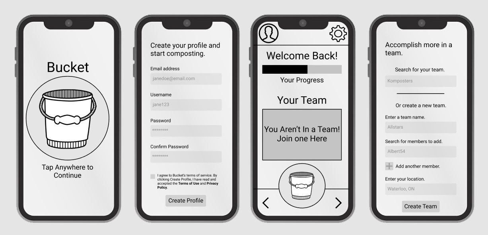

Bucket
Following Lean UX principles, my team researched the challenges of composting and designed a medium-fidelity mobile concept app that helps young professionals track their composting and connect with composting groups in their area.
Lean UX Qualitative Research Design Studio Mobile Prototype
Overview
Bucket is an app prototype designed to connect young professionals, who may find it challenging to compost individually, with composting communities and to track their composting contributions. Gamification and community are part of the experience to encourage team composting. As they join local teams of composters and participate in app-based competitions, these young professionals can feel more motivated and satisfied with their composting experience.
Role
- Research
- Wireframing
- Prototyping
Duration
- 12 Weeks
Tools
- Figma
- Google Jamboard
- Pen & Paper
Methods
- Qualitative Research
- Design Studio
- Group Critique
Process
This project was focused on team research and collaboration following Lean UX principles. Using research as a starting point and sounding board, our aim was to fail fast—to continually reassess our understanding of the problem and its best solution. We used elements of the Design Studio to facilitate our design process and team cohesion. The project follows three phases: Discover, Explore, Build.
Discover
In the first phase, we wanted to indentify a specific problem and understand the people we were designing for. We began by conducting interviews and making empathy maps to see if we could spot some shared pains among participants. From there, we drafted a problem statement and agreed on the characteristics of our protopersona.
Interviews
We wanted to come prepared with questions to our interviews but be flexible enough to probe further whereever
the conversation led. At Ewa Plonka’s suggestion, our team put together an interview conversation tree.
a branching set of interview questions designed to help us adjust course during our interviews
based on the participants’ answers and attitude toward the topic. As we prepared the interview questions,
I phrased mine to be open-ended, based on examples from Starter Questions For User Research by Sarah Doody.
Our goal was to discover environment-related interests and frustrations among the interview participants
and their communities. We focused our questions around the topics of environmentally-friendly products,
services, and personal habits.

Takeaways from the Interviews
- We discovered that people have the desire to engage in environmentally friendly practices but are often frustrated or apathetic about those practices, as they either don't know how to go about it or they see that the value of these practices is outweighed by the inconveniences.
- Besides the themes of inconvenience and lack of knowledge, we also discovered problem spaces in areas of physical and mental health and lack of awareness about environmentally positive initiatives where our participants lived.
Empathy Maps
Looking at our empathy maps, we discovered some converging trends. Participants said they would like to practice more environmentally friendly habits. They frequently felt frustrated at the lack of options and/or knowledge available. They commented on the lack of local green initiatives or problems with those initiatives. And they criticized single-use products. At the same time, participants' actions sometimes contradicted what they thought.
So what do these trends point to?
- We found that although our participants were all eager to practice more environmentally friendly habits, they struggled making impactful changes to their habits due to cost and convenience factors outweighing environmentally friendly habits.
- Another common issue we found during our empathy mapping phase was that our participants felt as though their individual impact on the environment felt miniscule and therefore, not valuable. Participants believed they didn't have the power as individuals to make a difference.
This got us thinking—
How do we help people feel less isolated and more connected?
Can there be a green service that involves both individuals and companies in the local area? What can we do, as designers, to facilitate a convenient and cost-efficient service that encourages a community to come together and encourage change?
Converging on a Problem Statement
Based on notes from our interviews and empathy maps, we tried to identify as many problems or needs as we could. Generating this list helped us come together as a group and decide on the direction of the project.
Addressing Differences in Demographics
While our interview participants were similar in age (between 20 and 30 years old) and live in cities, they reside in different parts of the world: India, the Philippines, and Canada. Naturally, specific environmental problems that came up during interviews differed based on geographic location. Because of these differing contexts, it was a challenge to identify converging issues we might address so we chose one issue that surfaced in more than one interview: frustrations with composting.
Understanding Variables at Play in the Problem
We saw a need to define a problem statement that addressed the community (both individuals and businesses) to a degree. In the Kitchener community, composting has a small following. During our participant interviews, the reasoning for limited composting practices seem to be linked to a lack of resources and convenience. Although most participants were pro-composting, none of the five individuals we interviewed actually practiced composting at home effectively or in a fulfilling way.
Our First Problem Statement
In general, we have noticed that people value convenience over the time, knowledge, and cost involved in making green choices, such as purchasing environmentally friendly products or recycling/composting.
There are composting services out there, but lack of convenient and affordable resources/services make it difficult to practice composting as a collective community (both individual households and businesses).
How might we help the community engage in healthier composting practices and be more satisfied with their composting experience?”
Drafting a Persona
We chose to focus on a target audience of young professionals that live in Kitchener, Ontario, who are interested in composting but lack knowledge or resources to compost regularly.
Explore
After choosing a problem statement, our team walked through the Design Studio process to narrow our scope: we set long-term goals, identified questions and assumptions, brainstormed how-might-we questions, and dot-voted on potential solutions.
Following the Double Diamond Model practice of diverging and converging, we widdled away at our problem to get at something more manageable.
Long-Term Goals
Our group brainstormed long-term goals—potential big-picture solutions to composting challenges—that would guide our product design.
We agreed on these two long-term goals, drawing from elements of different goals in our brainstorm list:
First Goal
Create a community all over the world to experience a simple way of composting & value the process and results while adopting composting as a lifestyle.
Second Goal
Help reduce compost waste by 30% all over the world.
Questions and Assumptions
We each wrote down our questions and assumptions related to the challenges of composting and then compiled them. This step helped us identify what we knew (or thought we knew), what we didn't know, and, ultimately, what we needed to learn from further research and testing.
How-Might-We Questions
Generating how-might-we questions helped us narrow the problem without prematurely creating solutions. Once we had shared our individual HMWs, we voted on which questions to focus on.
Dot Voting on Solutions
Having chosen three how-might-we questions, we brainstormed possible solutions for each. Then we dot-voted on the solutions that were most desirable to users/customers, viable as a business, technically feasible, and ethical. We then circled areas of greatest agreement and convergence.
Build
In this phase of the project, we did Crazy 8s and 3 Panel Sketches to generate specific ideas for screen interactions. We revisited our hypothesis and began making an app prototype that we could use for the first stages of usability testing. Based on critique from other groups in the class, we simplified our user flow and narrowed our scope even further.
Our Revised Hypothesis
Based on the work we had done in Phase 2, I revised the hypothesis to avoid designing too many features in our prototype and to nail down what our minimum viable product might look like. It includes a statement describing how we would validate our assumptions.
User Flow Revision
Our initial user flow was too feature heavy. From our classmates’ and instructor’s critique, we realized that we needed to simplify the scope of our prototype and focus on the task flows that directly addressed our problem statement and hypothesis. Given the constraints of the project, we decided to shelf extra features such as journal entry flow and settings and focus on how user would create a profile, join a team, enter compost contributions, and track contributions in a wider community.
Old User Flow
New User Flow
When a new user first loads the app, the app will redirect them immediately to creating an account for themselves. If the user is a returning user, the app will automatically redirect them to the home screen. This design is to help facilitate a smooth onboarding experience as a profile is absolutely needed to help track and join a composting team.
Designing Features in Low Fidelity
Based on the sketches that we had done, we designed a set of low-fidelity screens for our minimum viable product. These screens demonstrate the primary interactions users would encounter in the app.
Medium Fidelity
Before creating a clickable prototype on Figma for testing, we added more detail to the screens and added a hamburger menu in the top right corner for navigation. We finished this project having built a simple prototype that we could test for usability and to validate our assumptions.
Next Steps
- Test our medium-fidelity prototype for usability and to validate assumptions.
- If needed, make changes to the features and solutions we had chosen.
- Implement our findings from usability testing into the next version of the prototype: high fidelity.
- Add branding elements, such as colour, typeface, and spacing.
- Test again.
Reflections & Takeaways
This is just the beginning of a long project and is still at the research stages. Here are some things we could have done differently in the process or that we could do if we were to continue this project:
- It would have been good to limit our research to a specific geographical area rather than interview people across the globe. We realized different cities and regions face unique environmental challenges so defining a problem that represents everyone is hard to do.
- We could have tested our low-fidelity screens to help us design for medium fidelity. Feedback at each stage of the build process would have helped us narrow our scope and understand if our solutions were desirable and functional.
- Once we had defined a problem, we could have created a few personas based on further research into composting in the Kitchener area.
Would you like to know more about this project?
This case study is an overview of the work we did for this project and the collaboration methods we used. If you're interested in learning more about this project, please contact me by email or through LinkedIn.